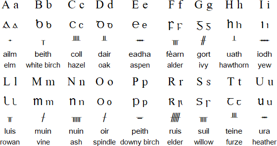
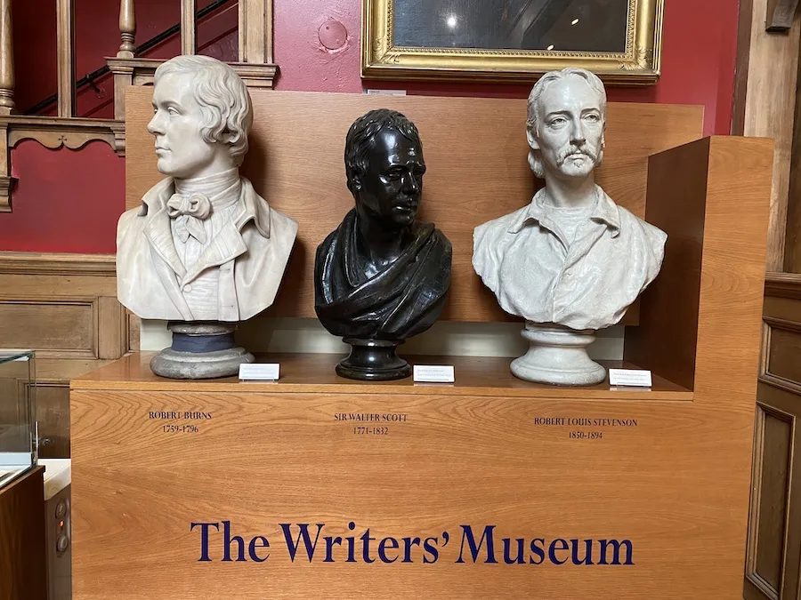
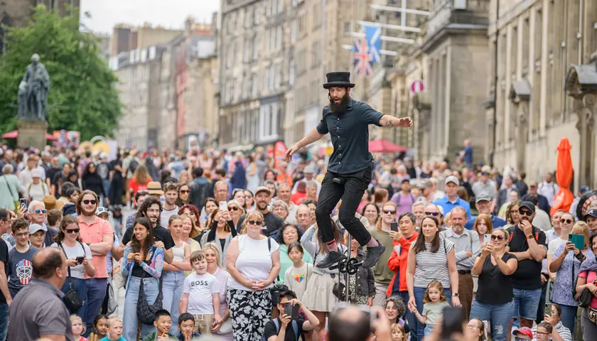

Culture
Scotland’s culture blends ancient traditions with modern creativity:
Bagpipes and Kilts
The bagpipe is Scotland’s most iconic musical instrument, known for its powerful, haunting sound. Traditionally played at ceremonies, parades, and celebrations, it is often paired with the kilt, Scotland’s national dress. Kilts are made from tartan patterns that represent clans and families, reflecting Scotland’s heritage.

Ceilidh Dancing
Ceilidh (pronounced kay-lee) is traditional Scottish social dancing, usually accompanied by lively folk music. Everyone is encouraged to join, making it a fun way to experience Scottish culture and community spirit. The dances include group formations, reels, and set dances.

Gaelic Language
Scottish Gaelic is one of Scotland’s native languages, still spoken in the Highlands and the Western Isles. Learning a few basic phrases, like “Ciamar a tha thu?” (How are you?), connects you to the region’s history. Road signs and place names often reflect Gaelic origins.

Art & Literature
Scotland has a rich artistic and literary tradition. From historic painters to modern galleries, and authors like Robert Burns, Sir Walter Scott, and J.K. Rowling, the country inspires creativity. Edinburgh, a UNESCO City of Literature, hosts major book festivals each year.

Festivals
Scotland hosts festivals celebrating music, arts, and tradition. The Edinburgh Festival Fringe is the world’s largest arts festival, Hogmanay marks New Year with spectacular street parties, and Highland Games feature sports, dancing, and music rooted in tradition.
